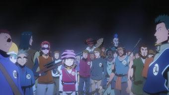
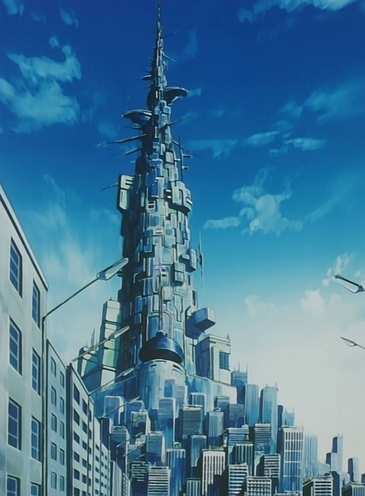
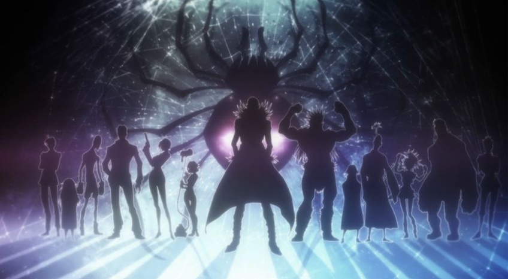
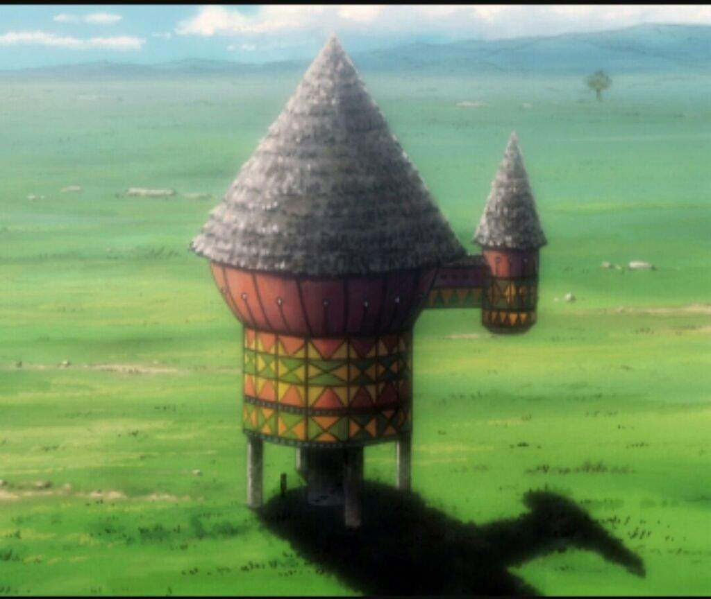
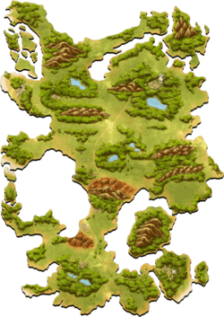
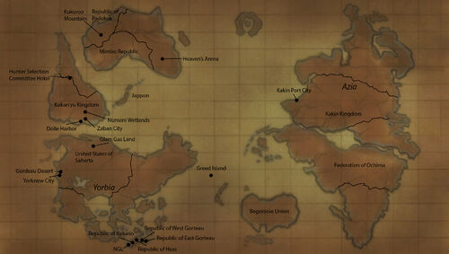
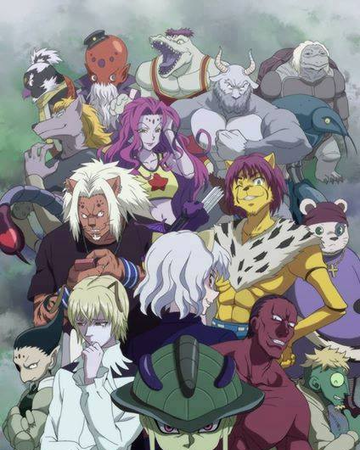
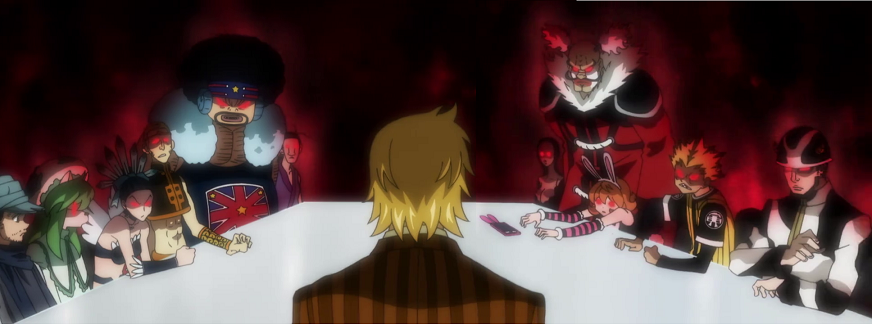

Story Arcs
Hunter Exam
Hunter Exam

The Hunter Exam (ハンター試験, Hantā Shiken) is a yearly event which an applicant must pass in order to become a Hunter, an elite member of humanity and a part of the Hunter Association. These exams consist of several tests and stages which can vary drastically. Thus far, 289 Hunter Exams have taken place. The Head of the Exam Commission is the Chairman of the Hunter Association themselves.
Heaven's Arena
Heavens Arena
The Heavens Arena (天てん空くう闘とう技ぎ場じょう, Tenkū Tōgijō) is a tower combat arena, the world's most popular battle site, where victorious fighters ascend to higher floors as part of its reward system.[1] It is on the same continent as the Republic of Padokea, Killua Zoldyck's country, but is located in the eastern part of the continent, opposite of where Padokea is.[2]
The fourth-tallest building in the world, Heavens Arena stands 991 meters (approx. 3,250 feet) tall and has 251 floors. Inside, thousands of martial artists (4,000 fighters on average) compete daily in order to test their skills and advance to higher floors.[2][1] The annual spectator attendance is over 1 billion and the building is fully equipped with service facilities, including restaurants and shopping.[1]
Competitors are allowed to fight and defeat their opponent using any means, but weapons are not allowed on the first 199 floors.[3] Competitors are given prize money for advancing on each of those 199 floors. After reaching the 100th floor, competitors get their own private room. When Killua first went to Heavens Arena at the age of six, he quit at the 199th floor and spent all the prize money on cakes.[1]
Up to the 200th floor, the building is divided into twenty 10-floor parts. For example, a fighter who wins on the 40th floor advances to the 50th, and one who loses on the same level regresses to the 30th: a 10-story scale.[1]
Recently, the top floors of the arena were devastated by the deathmatch between Chrollo Lucilfer and Hisoka Morow.[4]
Heaven's Arena arc takes place after the Hunter Exam arc in the manga and the Zoldyck Family arc in the anime. The arc focuses on the real test after qualifying the Hunter Exams and that is to learn Nen. Gon and Killua are the focus of the arc as they go to Heaven's Arena and learn how to use Nen from Wing, a former student of Biscuit Krueger.
Yorknew City
Yorknew City
Yorknew City (ヨークシンシティ, Yōkushin Shiti) is a sprawling metropolis of the United States of Saherta, on the Yorbian Continent.
The city annually holds various auctions from the 1st to the 10th of September, including the world's largest auction: the Southernpiece Auction,[1][2] in which the world's rarest and most valuable artifacts are accumulated in one place. Aside from thousands of lawful auction houses, the city is also famous for its black market auctions which mostly deal with illegal goods. The Mafia Community's Underground Auction takes place here every year, in the Cemetery Building.[3]
During the ten days of the auctions, tens of trillions of Jenny are exchanged in the official auctions alone. Yorknew's auctions are where one's dreams can come true-an item bought for Jenny Symbol 2011.svg10 thousand can be sold for Jenny Symbol 2011.svg100 million the next day.[1] According to Light Nostrade, the city's election and authority are mostly bribed and controlled by the Mafia Community. As a result, all enforcement forces in the city ranging from police to SWAT are literally dirty cops and Mafia henchmen in which the Mafia can order them to create blockage across the city during the Phantom Troupe's rampage.[4]
The Yorknew City arc is quite easily one of the best ones that we've seen in the story so far. Once again, we have Kurapika in the focus, but this time, his friends along with the Phantom Troupe enter the fray as well.
Greed Island
Greed Island

Locations:
- Shiso Tree: This is the starting point of the game.
- Magic City of Masadora: This is the only place on the island where Spell Cards can be purchased.
- Spell Card Shop: Where players can purchase spell cards at a given price. When spell cards are used or players leave the game, the inventory of cards is replenished.
- Port City Soufrabi: A place where the player can find a method to leave Greed Island and return to the real world. It can be attained by bribing or knocking out the Harbor Master.
- The City of Love, Aiai: Filled with almost every romantic scenario. Hisoka considers it a nice place to spend time.
- City of Prizes, Antokiba: Every month a different contest is held, with differing prizes for each month. Specified Slot Card can be won during the even months. It is one of the two starting cities.
- Gambling City Dorias: Plenty of casinos are located here, and this is also where some cards can only be acquired by playing in here. The item "Risky Dice" can be useful here.
- Rubicuta: Another starting town in the game because of its short distance from the islands main entrance.
- Capital City, Limeiro: The capital of Greed Island that can only be accessed by those who have completed the Specified Slot Cards and won the End of Game Quiz to receive card #000 "Rulers Blessing". Dwun and List live here.
- Port: The only port on the island and home of the Harbormaster; by defeating him the player gets a "Transport Ticket" card to leave the game. Elena, a Game Master, operates from a tower in the port city teleporting players out of the game.
- Badlands: A series of hills (composed of eroded sedimentary rocks) in dry terrain with minimal vegetation and inhabited by many monsters. It is where Gon and Killua were trained by Biscuit. Within its area, there is an abandoned town/camp and tunnels dug by Gon and Killua.
- Village of the Bandits from the Mountains: Where the Sick Villagers, that pose as bandits in the mountains, reside. Everyone in the village suffers from a curse, similar to an endemic disease that increases from a low to a high fever, fatal after one month. Once the player heals all of them, card #075 "Wild Luck Alexandrite" is given as a reward for the achievement.
- Bunzen: Little is known about this town or village to which Abengane returns after talking with Gon and Biscuit; his purpose there was, apparently, mainly to use the forest nearby the city entrance to perform the ritual involved in his Exorcism Nen ability.
- Trade Shops: Where players can buy information, deposit money, sell cards, and purchase cards (other than the spell ones, including all the rank-B cards).
Location on the world map:

Chimera Ant
Chimera Ants
Chimera Ant arc introduces the Chimera Ants to us who turn out to be a huge threat to the entire human race. Gon and Killua enter their territory with the help of Kite, one of Ging's former students. There, they witness the mind-blowing power of the Ants and are forced to get stronger. With the birth of the King, the humans are all but set to be exterminated, but Netero is asked to put an end to him, setting up a magnificent confrontation. Meanwhile, Gon aims to get Kite back and undergoes a great change when he finds out about his death.
13th Hunter Chairman Election
13th Hunter Chairman Election
Gon and Killua's friendship is thrown under a lot of focus, and with Leorio returning, the arc gets much more interesting. Furthermore, we're finally introduced to Ging Freecss properly and by the end of the arc, Gon gets to meet him as well. The world of Hunter x Hunter is expanded vastly when Ging mentions the existence of the Dark Continent to us.